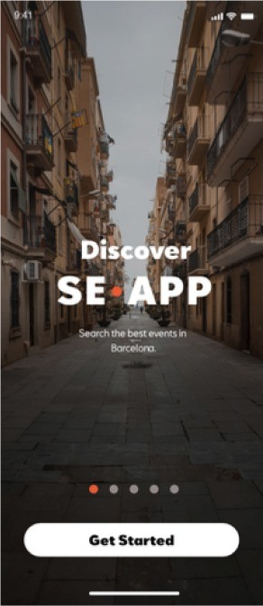
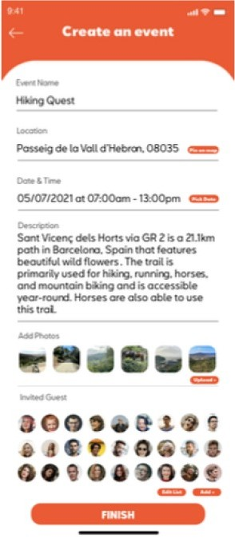
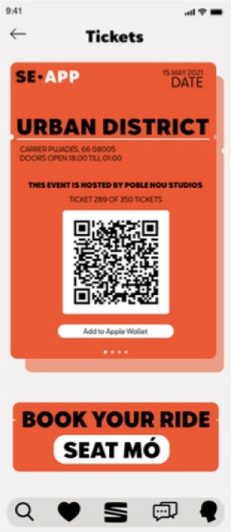

Project 06 / 08 — Mobility UX
SEAT × Anima Design
Client
SEAT Innovation & Anima Design
Role
UX Strategist & UI Designer
Sector
Automotive / Gen Z Digital
Year
2021
Context
SEAT partnered with Anima Design to explore the future of digital mobility — and asked me to reframe the product for Gen Z.
A generation increasingly disengaged by outdated app mechanics and broad, undefined demographic targeting. My first step was a full critique of the existing product and its audience alignment.
"Experiences empowered by community is the new mindset of mobility."
This reframed the app not around transport, but around spontaneous, shared experiences — positioning SEAT as a lifestyle connector, not just a car company.
SE-APP, In Screen
Discover, create, and hold the ticket — three moments from the flow.



Information Architecture
A Big IA and Small IA, mapped so every screen earns Gen Z's attention rather than assuming it.
User Journey
Six phases from first hearing about the app to coming back for another event.
| Phase | Pre-Onboarding | Onboarding | Browse | Book | Attend | Post-Event |
|---|---|---|---|---|---|---|
| Goal | Get out of house | Feel prepared & safe | Find something exciting | Make a plan with someone | Feel part of something | Keep the momentum going |
| Touchpoints | Posters, peer referrals | App UI/UX | Event feed, filters | Event detail page | Maps, hosts | Review prompt, saved events |
| Pain Point | Doesn't know what to expect | Worries she won't fit in | Not many local Gen Z events | Nervous to commit | Language or age barrier | Falls out of habit easily |
| Emotion | Curious | Hopeful | Excited | Anxious | Surprised | Motivated |
Persona
Alex
Age 20 — Barcelona, Spain
Student — introverted but curious
Heavy phone user, prefers intuitive, visual-first apps.
Goals
- Explore the city freely
- Build new friendships
- Find part-time work
Frustrations
- Feels out of place at some events
- Doesn't speak fluent Spanish
- Worries about not knowing anyone
Colour System
What I Did
- —Ran UX interviews and competitive analysis to build a scalable structure
- —Designed participatory onboarding flows and adaptive visual systems
- —Paced content using Ebbinghaus' memory theory
- —Built a custom SEAT feed that only unlocks post-event
- —Designed personalised onboarding via an archetype quiz and video-led landing page
- —Built and delivered the final deck in SEAT's own brand fonts and visual DNA
Outcome
"This wasn't just an app redesign — it was a shift in how SEAT could show up as a cultural entity in a crowded digital landscape."